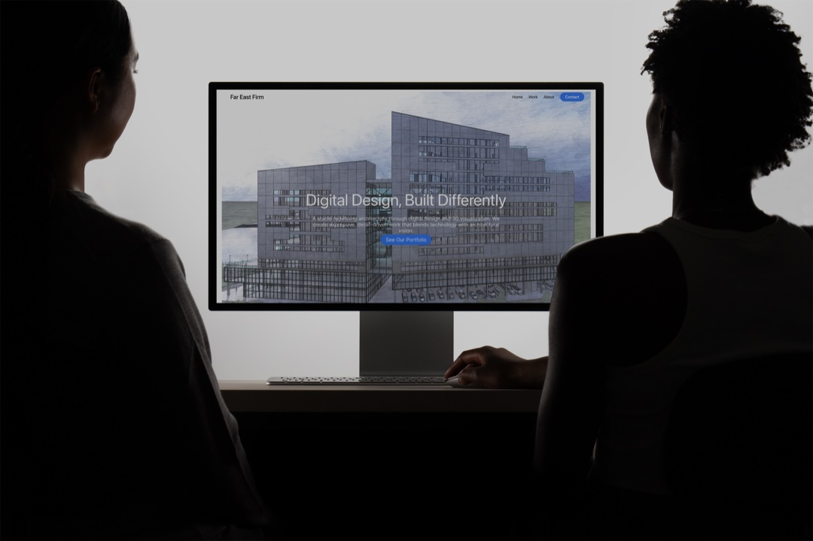

Far East Firm
Work on holdWeb Design · Web Development
Website design and development for an up and coming architecture firm. I worked with the firm to design a modern and intuitive website to showcase their work and gain new clients.
Additional client work includes web design, graphic design, brand identity, etc.

Web Design · Web Development
Website design and development for an up and coming architecture firm. I worked with the firm to design a modern and intuitive website to showcase their work and gain new clients.
Logo Design · Brand Identity
Logo design and brand identity work for an up and coming Knitting brand. I worked with the founder to design a unique logo representing the brand, the founders background, and the founders attachment to knitting.